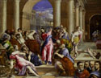

From
the collection


El Greco (Domenikos Theotokópoulos)
Christ Driving the Money Changers from the Temple
About 1570
Oil on canvas
H.46 x W.59 in.
The William Hood Dunwoody Fund
El Greco spent the early years
of his career in Italy, where he was profoundly influenced by Venetian
Mannerism. In this composition (painted in Rome), the jarring lines
and harsh colors, confused space, and illogical lighting are Mannerist
traits that contribute to the atmosphere of anger and disruption.
In
1577 El Greco settled permanently in Spain. A native of Crete, he became
known as "El Greco" (the Greek), but here his full signature appears
in Greek letters on the step below Christ. In the lower right corner,
El Greco portrayed the four artists he regarded as the giants of the
Renaissance: Michelangelo, Giulio Clovio, the aged Titian, and probably
Raphael.